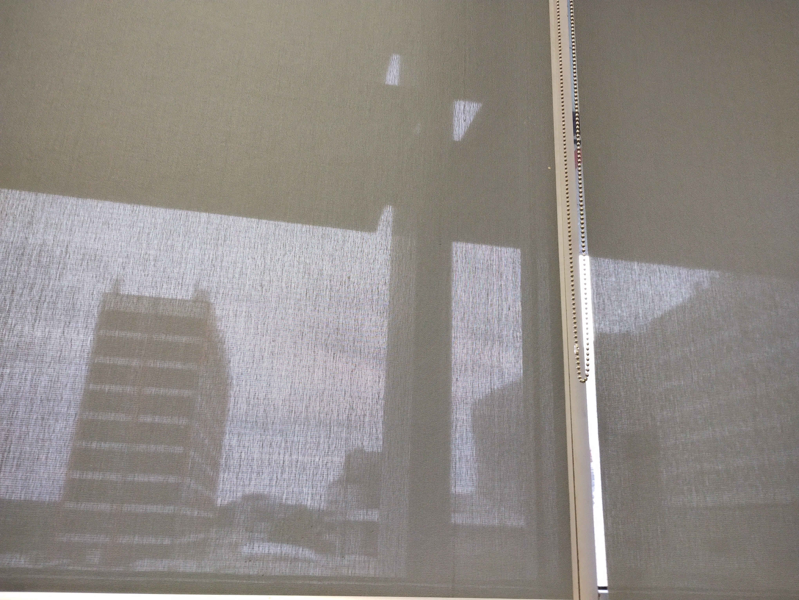

Activities I Enjoy in Melbourne
- Studying in quiet spaces at Swinburne or local cafés
- Walking around Melbourne and exploring different suburbs
- Visiting parks and gardens to relax between study sessions
- Attending cultural events, markets, and festivals
- Doing light fitness activities like walking or stretching
- Meeting friends for study sessions or casual catch-ups
My Study Environment

This is a photo I took inside one of the classrooms at Swinburne University. I chose this image because it represents my real study environment here in Melbourne. The soft light coming through the window creates a calm atmosphere that helps me stay focused during classes and study sessions.
My Typical Study Day at Swinburne
| Time | Activity | Details |
|---|---|---|
| 8:00 am – 9:00 am | Morning routine | Breakfast, check Canvas, plan my tasks for the day. |
| 9:00 am – 12:00 pm | Focused study | Work on weekly readings, lectures, and assignments. |
| 12:00 pm – 1:00 pm | Lunch break | Have lunch and take a short walk to reset. |
| 1:00 pm – 3:00 pm | Classes or tutorials | Attend scheduled classes and participate in activities. |
| 3:00 pm – 5:00 pm | Independent study | Review class content and work on assignments. |
| Evening | Relax and light review | Relax, unwind, and prepare for the next day. |